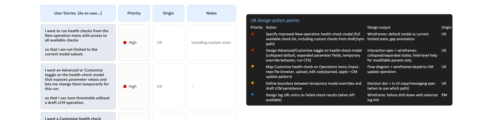
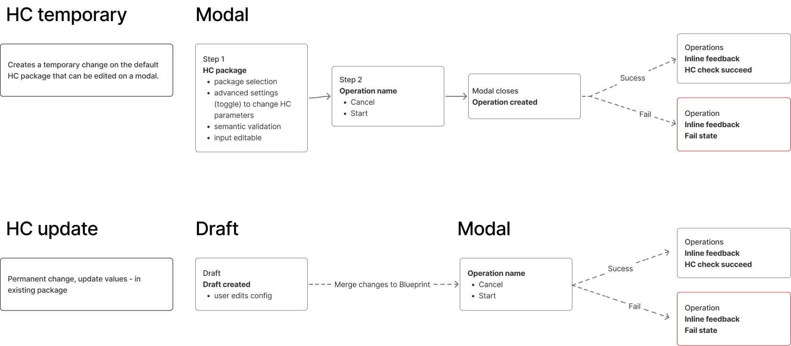
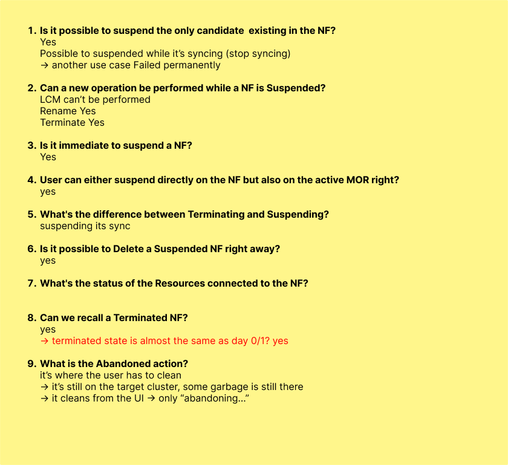

Clarify
Worked with architects and stakeholders to clarify open requirements, constraints and missing information.
Nokia - Product Design
NCOM Evo is part of Nokia's Platform Products ecosystem, and stands for Nokia Cloud Operation Manager. It is a platform that helps experts manage and deploy networks, infrastructures, workloads and the lifecycle of services from a single place.
NCOM was conceived to reduce the time and effort required for complex operations, making highly technical workflows more guided, automated and accessible.
I worked within a UX team composed of me, two designers and a team leader.
Due to a non-disclosure agreement, some product details cannot be shared publicly. The case focuses on my role, process, contributions, and learnings at a high level. If you'd like to have a deeper look, feel free to reach out.
NCOM Evo supports complex Network Function operations across states, versions and lifecycle tasks. The challenge was to make these complex workflows clearer, more predictable and easier to act on.
Turning missing system states and requirements into clearer product feedback.
Knowing what actions are available and what to do next throughout the workflow.
Making decisions with enough context and reducing cognitive effort across complex operations.
Worked with architects and stakeholders to clarify open requirements, constraints and missing information.
Mapped flows, system states, dependencies and edge cases to make complex behaviours easier to discuss.
Created diagrams, early drafts and design directions to test possible solutions quickly.
Iterated through regular stakeholder sessions and internal UX reviews to align decisions and maintain consistency.
Prepared design specs, supported implementation and conducted UX/UI QA to ensure quality.
Allowing users to customise health checks at the moment of execution
Health checks were already configurable through a longer setup flow. When users wanted to run a health check directly, the existing modal was too limited. The challenge was to allow quick, temporary adjustments without entering a complete lifecycle draft operation workflow.


Mapping Network Function states into clear behaviours and actions
Network Functions could move through multiple states, each affecting what users could see, do and understand in the interface. The challenge was to translate this complex state logic into a consistent experience across status indicators, action menus, overview sections and detail panels.
Early questions helped clarify state transitions, expected behaviours and edge cases.


I structured the state logic into a framework covering behaviours, available actions, disabled options and interface feedback. This matrix became a shared framework used across teams, helping align UX, product and engineering decisions across Network Function states.

The product is still under development, so quantitative metrics are not available yet. However, the work already contributed to clearer product direction, stronger implementation foundations and more efficient team collaboration.
This project reinforced that in complex technical products, the value of design often goes beyond the final interface. The most important contribution was creating structure across teams: clarifying hidden system logic, mapping edge cases and helping UX, product, architecture and engineering align around shared decisions.
It showed me that strong design work can create direction before final screens, reducing ambiguity and making complex workflows easier for teams to reason about, validate and implement.
AI also supported this process by accelerating synthesis, exploration and prototyping, while the final direction remained grounded in collaboration, validation and product understanding.